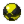

Les poké balls sont des capsules permettant de capturer un pokémon.
Les poké balls n'ont pas d'effet important sur la stratégie pokémon mais je voulais quand même en parler car pour l'aventure principale des jeux, la capture et la chasse aux pokémon chromatiques, cela reste tout de même bon à savoir.
Les différents types de balls :
Depuis la 1ère génération, un panel plus ou moins varié (selon le jeu) de poké-balls nous est offert.
Balls apparues en 1ère génération :
- poké ball : taux de capture x1
- super ball : taux de capture x1,5
- hyper ball : taux de capture x2
- safari ball : uniquement utilisable dans le parc safari, taux de capture x1,5
- master ball : capture garantie
Balls apparues en 2ème génération :
- lune ball : taux de capture x4 sur les pokémon évoluant avec une pierre lune
- love ball : taux de capture x8 sur les pokémon de la même espèce et du sexe opposé
- appât ball : taux de capture x3 sur les pokémon pêchés
- masse ball : plus le pokémon est lourd plus le taux de capture est élevé
- copain ball : taux de capture x1, donne 200 points de bonheur au pokémon capturé
- niveau ball : plus le pokémon a un niveau élevé par rapport au niveau de votre pokémon, plus le taux de capture est élevé
- speed ball : plus le pokémon est rapide, plus le taux de capture augmente. Fonctionne particulièrement bien sur les pokémon ayant tendance à fuir.
- compét ball : taux de capture x1,5, utilisable uniquement au concours de capture des pokémon insecte dans les versions or, argent, cristal, heartgold et soulsilver
Balls apparues en 3ème génération :
- faiblo ball : plus le niveau du pokémon est bas, plus le taux de capture est élevé. Ne fonctionne que sur les pokémon dont le niveau est inférieur à 31
- scuba ball : taux de capture x3,5 sur les pokémon pêchés et les pokémon des fonds marins (trouvables en utilisant plongée)
- filet ball : taux de capture x3 sur les pokémon de type eau ou insecte
- luxe ball : taux de capture x1, multiplie par 1,7 le bonheur gagné par le pokémon
- chrono ball : taux de capture x4 à partir du 11ème tour
- bis ball : taux de capture x3 sur les pokémon déjà capturés auparavant
- honor ball : taux de capture x1, il s'agit seulement d'une poké ball classique recolorée
Balls apparues en quatrième génération :
- soin ball : taux de capture x1, soigne entièrement le pokémon
- rapide ball : taux de capture x5 au premier tour
- sombre ball : taux de capture x3,5 dans les grottes ou de nuit
- parc ball : capture gatrantie, uniquement utilisable au parc des amis de Sinnoh
- mémoire ball : poké ball dans laquelle sont les pokémon d'évènement. Utilisable seulement en trichant, capture garantie en 4ème génération et taux de capture x1 en 5ème génération
Ball apparue en 5ème génération :
- rêve ball : capture garantie en 5ème génération, taux de capture x4 sur les pokémon endormis à partir de la 6ème génération
Ball apparue en 7ème génération :
- ultra ball : taux de capture x5 sur les ultra chimères et x0,1 sur les autres pokémon
Ball apparue en 8ème génération (De/Ps) :
- étrange ball : non utilisable en jeu, sprite remplaçant les sprites de poké balls non modélisés dans pokémon perle scintillante et diamant étincelant (poké balls exclusives à Légendes pokémon Arceus)
Balls exclusives à Légendes pokémon Arceus :
- poké ball de Hisui : taux de capture x1
- super ball de Hisui : taux de capture x1,5
- hyper ball de Hisui : taux de capture x2
- masse ball de Hisui : taux de capture x1 et taux de capture x1,25 sur les pokémon n'ayant pas vu le joueur
- mégamasse ball : taux de capture x1,75 et taux de capture x2 sur les pokémon n'ayant pas vu le joueur
- gigamasse ball : taux de capture x2,5 et taux de capture x2,75 sur les pokémon n'ayant pas vu le joueur
- plume ball : taux de capture x1 et taux de capture x1,25 sur les pokémon volants ou agiles
- envol ball : taux de capture x1,5 et taux de capture x1,75 sur les pokémon volants ou agiles
- propulse ball : taux de capture x2 et taux de capture x2,75 sur les pokémon volants ou agiles
- origine ball : capture garantie
Balls exclusives à pokémon Uranium (non officielles) :
- nuclear ball : taux de capture x3 sur les pokémon de type nucléaire et taux de capture x1 sur les autres
- atom ball :ball exclusive à un évènement, taux de capture x5 sur les pokémon de type nucléaire et taux de capture x1 sur les autres